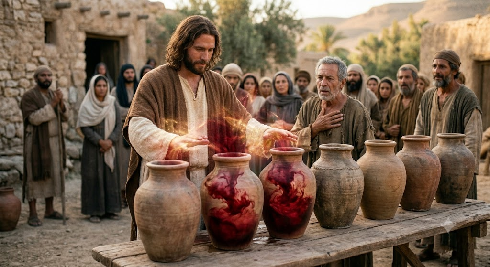

Curar
Tipo: Defesa
ele pode curar qualquer doeça ou deficiencia física.
UM Deus de Jerusalém

Arte oficial do grandioso
Jesus,também chamado Jesus de Nazaré (n. 7–2 a.C. – m. 30–33 d.C.), foi um pregador e líder religioso judeu do primeiro século. É a figura central do cristianismo e aquele que os ensinamentos de maior parte das denominações cristãs, além dos judeus messiânicos, consideram ser o Filho de Deus. O cristianismo e o judaísmo messiânico consideram Jesus como o Messias aguardado no Antigo Testamento e referem-se a ele como Jesus Cristo, um nome também usado fora do contexto cristão. Praticamente todos os académicos contemporâneos concordam que Jesus existiu realmente, embora não haja consenso sobre a confiabilidade histórica dos evangelhos e de quão perto o Jesus bíblico está do Jesus histórico. A maior parte dos académicos concorda que Jesus foi um pregador judeu da Galileia, foi batizado por João Batista e crucificado por ordem do governador romano Pôncio Pilatos. Os académicos construíram vários perfis do Jesus histórico, que geralmente o retratam em um ou mais dos seguintes papéis: o líder de um movimento apocalíptico, o Messias, um curandeiro carismático, um sábio e filósofo, ou um reformista igualitário. A investigação tem vindo a comparar os testemunhos do Novo Testamento com os registos históricos fora do contexto cristão de modo a determinar a cronologia da vida de Jesus. Quase todas as linhas cristãs acreditam que Jesus foi concebido pelo Espírito Santo, nasceu de uma virgem, praticou milagres, fundou a Igreja, morreu crucificado como forma de expiação, ressuscitou dos mortos e ascendeu ao Céu, do qual regressará. A grande maioria dos cristãos adoram Jesus como a encarnação de Deus, o Filho, a segunda das três pessoas na Santíssima Trindade. Alguns grupos cristãos rejeitam a Trindade, no todo ou em parte. No contexto islâmico, Jesus (transliterado como Issa) é considerado um dos mais importantes profetas de Deus e o Messias. Para os muçulmanos, Jesus foi aquele que trouxe as escrituras e é filho de uma virgem, mas não é divino, nem foi vítima de crucificação. O judaísmo rejeita a crença de que Jesus seja o Messias aguardado, argumentando que não corresponde às profecias messiânicas do Tanaque.
Tipo: Defesa
ele pode curar qualquer doeça ou deficiencia física.
Tipo: Suporte
Ele pode transformar qualquer coisa noque ele quiser por exemplo água em vinho.

"Eu sou o caminho, e a verdade, e a vida; ninguém vem ao Pai senão por mim.."
— Nome do Personagem